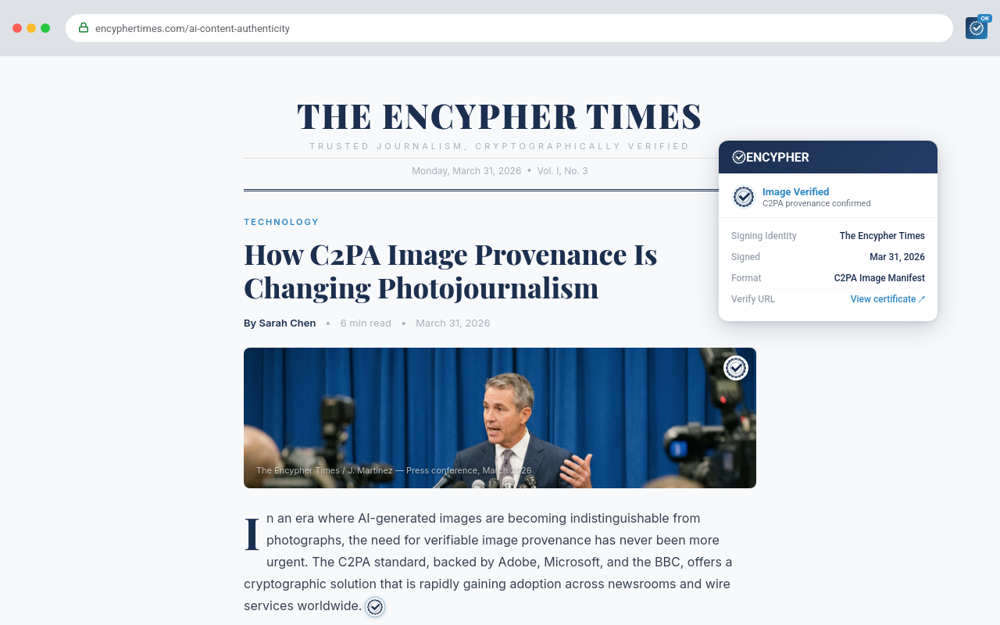
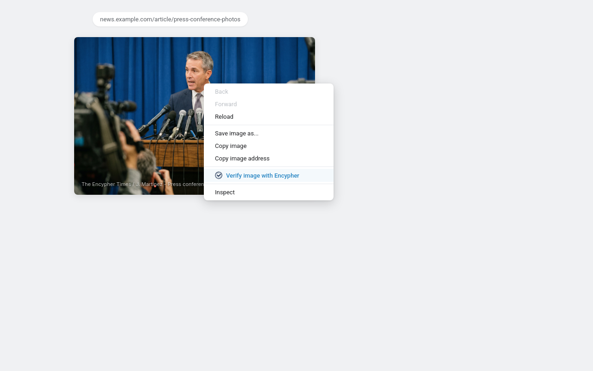
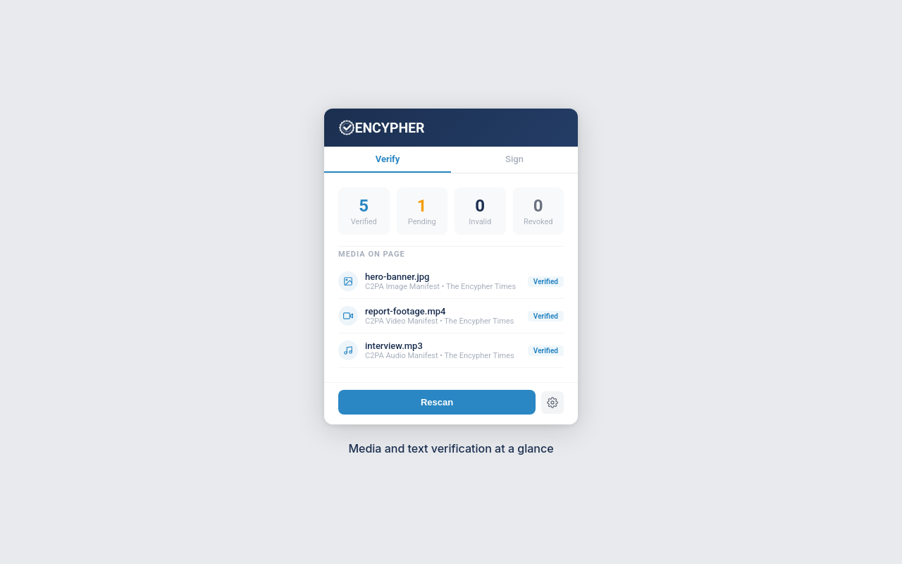
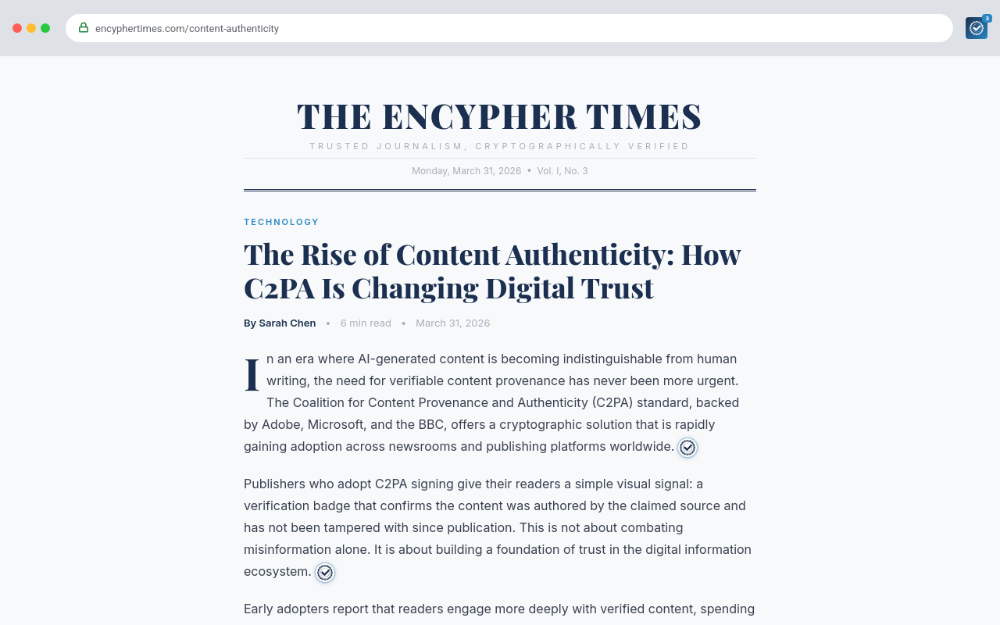
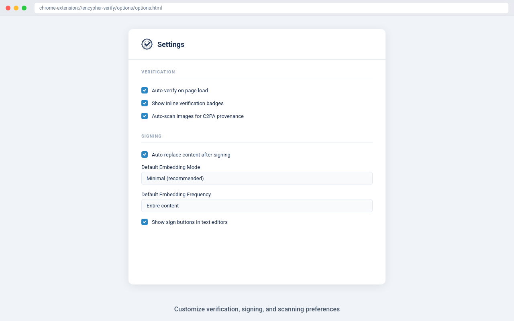
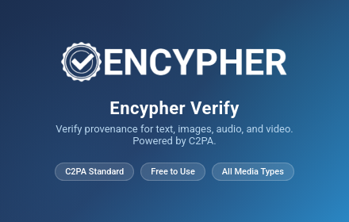
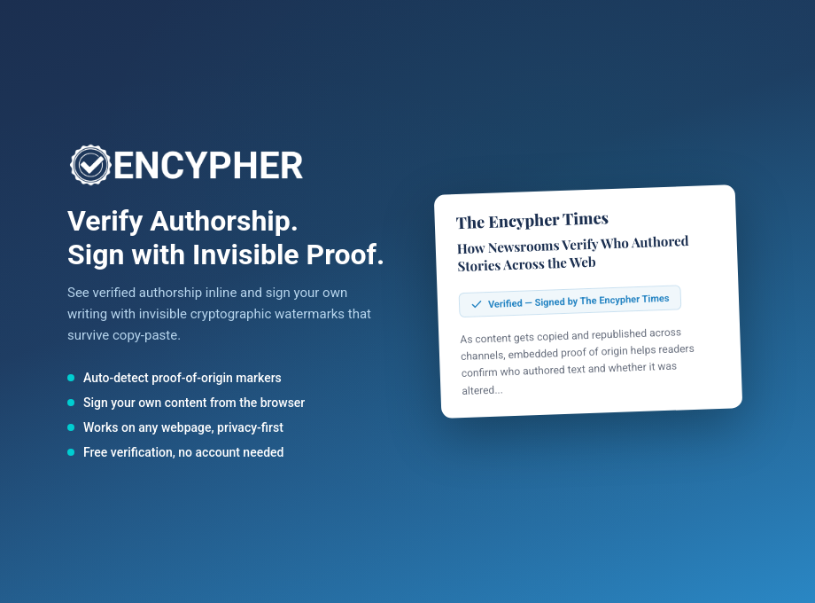
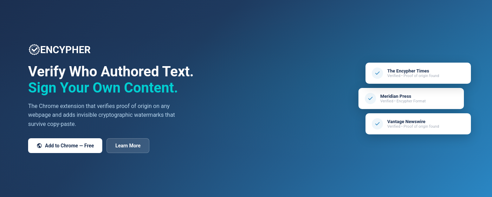

Store Metadata
Name: Encypher Verify
Short Description (132 chars): Verify provenance for any text, image, audio, or video on the web. Powered by C2PA - cryptographic proof of origin, free for all.
Category: Productivity / News & Weather
Tags: C2PA content authenticity media provenance verification proof of origin
Version: 2.0.0
Privacy Policy: https://encypher.com/privacy
Promotional Images
Image Verification Badge (1280x800)
screenshot-1-image-verification-badge.png

Context Menu - Media Verification (1280x800)
screenshot-2-context-menu-media.png

Popup - Media on Page (1280x800)
screenshot-3-popup-media-section.png

Text Verification Badge (1280x800)
screenshot-4-text-verification-badge.png

Options - Auto-Scan Toggle (1280x800)
screenshot-5-options-auto-scan.png

Small Promo Tile (440x280)
promo-small-440x280.png

Large Promo Tile (920x680)
promo-large-920x680.png

Marquee Promo Tile (1400x560)
promo-marquee-1400x560.png

Detailed Description
Verify Provenance Across Text, Images, Audio, and Video - Free, No Account Required.
Every day, content moves across the web without proof of who made it. Encypher Verify brings cryptographic provenance to your browser. Powered by the C2PA standard, it detects and verifies proof of origin in text, images, audio, and video on any website - instantly, at no cost.
Version 2.0 expands far beyond text. Right-click any image, audio element, or video to verify its provenance. Automatic C2PA scanning detects signed images as you browse, with no action required. A new "Media on page" section in the popup shows every detected media element and its verification status at a glance.
What you can verify:
- Text: Detects invisible cryptographic watermarks (C2PA text manifests, zero-width character embeddings) on any webpage. Inline badges show verification status directly in the page.
- Images: Right-click any image to verify C2PA provenance. Automatic background scanning detects signed images via lightweight header inspection (first 4KB only). Verified images get a floating badge overlay.
- Audio: Right-click any audio element to verify. Supports files up to 50MB. No authentication required.
- Video: Right-click any video element to verify. Supports files up to 100MB. No authentication required.
What you can sign:
- Sign your own content directly in the browser with invisible cryptographic watermarks that survive copy-paste and distribution.
- Works inside Google Docs, ChatGPT, Claude, Gmail, Outlook Web, Slack, LinkedIn, GitHub, X/Twitter, Medium, and dozens of other editors.
Automatic C2PA scanning:
As you browse, Encypher Verify scans images, audio, video, and documents on the page for C2PA provenance markers using lightweight Range requests that inspect only the first 4KB of each file. No full downloads. Per-media-type bandwidth limits prevent any single category from starving others.
All verification is free. No account required for any media type.
What's New in v2.0.0
- Image verification: Right-click any image to verify C2PA provenance. Verified images display a floating badge overlay. Supports images served via CSS background-image and blob: URLs.
- Audio and video verification: Right-click audio or video elements to verify provenance - supports files up to 50MB (audio) and 100MB (video), no authentication required.
- Document verification: Detects embedded PDFs, EPUB, DOCX, PPTX, XLSX, XPS, and ODT. Recognizes HLS (.m3u8) and DASH (.mpd) streaming manifests.
- Automatic C2PA scanning: Lightweight header detection identifies signed media as you browse, with per-media-type bandwidth limits and configurable toggle.
- Shadow DOM traversal: Detects media inside web components and custom elements (depth-limited, capped at 50 shadow roots).
- SPA navigation: Automatic rescan on pushState/replaceState route changes, popstate, and hashchange events.
- Dynamic content: Observes src/srcset/data-src attribute mutations to catch lazy-loaded images and dynamically swapped video sources.
- Media on page: New popup section shows all detected images, audio, video, and documents on the current page with verification status and on-demand verify buttons.
- All verification is free - no account required for any media type.